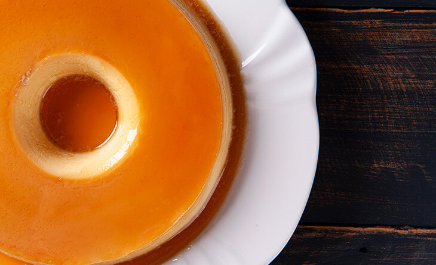
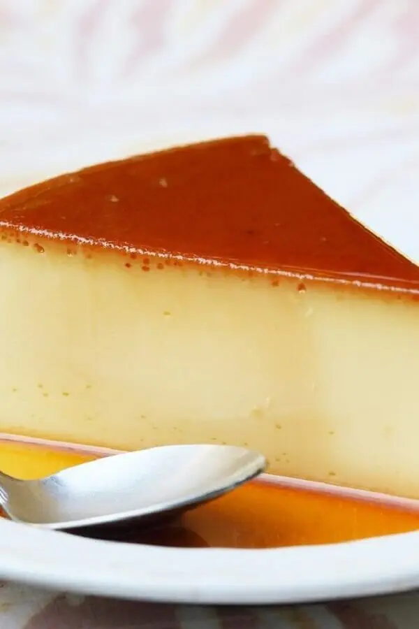

1 lata de leite condensado
3 ovos inteiros
1 lata de leite (medida da lata de leite condensado)
1 xícara (chá) de açúcar
1/2 xícara de água
Primeiro, bata bem os ovos no liquidificador.
Acrescente o leite condensado e o leite, e bata novamente.
Derreta o açúcar na panela até ficar moreno, acrescente a água e deixe engrossar.
Coloque em uma forma redonda e despeje a massa do pudim por cima.
Asse em forno médio por 45 minutos, com a assadeira redonda dentro de uma maior com água.
Espete um garfo para ver se está bem assado.
Deixe esfriar e desenforme.
 